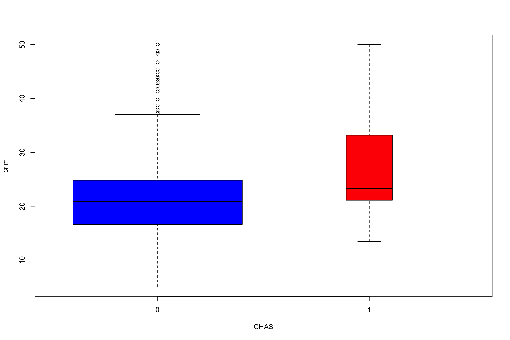
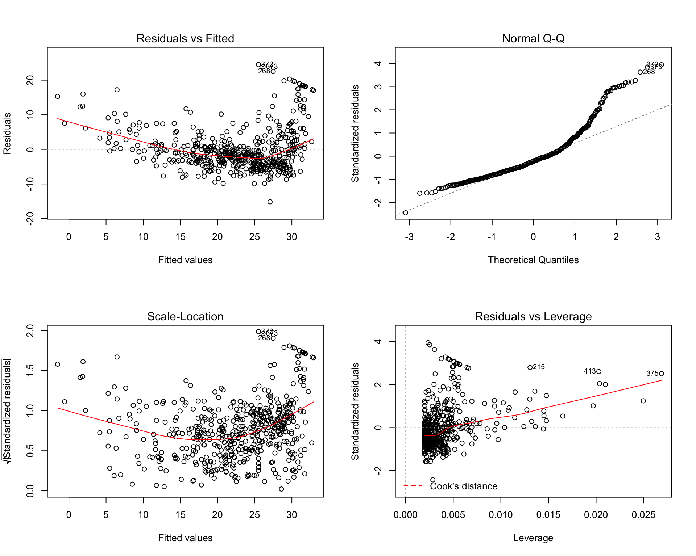
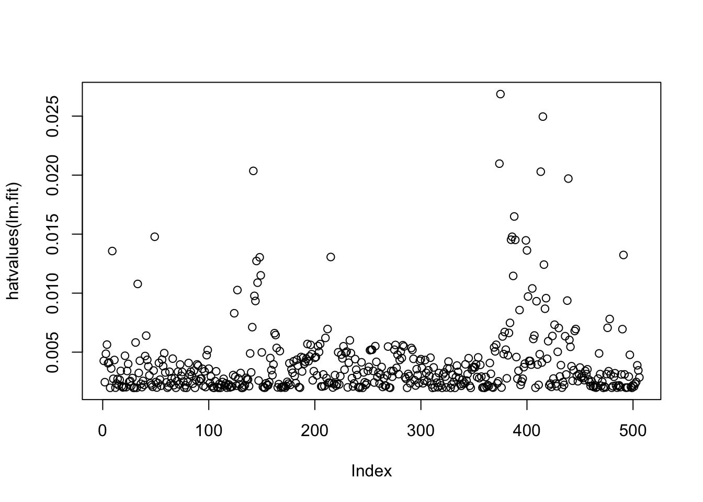

6 Modelos lineales y análisis de la varianza
6.1 Principios de la modelización estadística
Dado un conjunto de variables, cada una de las cuales es un vector de lecturas de un rasgo específico de las muestras en un experimento.
Problema: ¿De qué manera una variable \(Y\) depende de otras variables \(X_1,...,X_n\) en el estudio?
Un modelo estadístico define una relación matemática entre los \(X_i\) y \(Y\). El modelo es una representación del real \(Y\) que pretende reemplazarlo en la medida de lo posible. Al menos el modelo debería capturar la dependencia de \(Y\) de los \(X_i\).
6.1.1 Identificar y Caracterizar Variables
Este es el primer paso en el modelado:
Qué variable es la variable de respuesta;
Qué variables son las variables explicativas;
¿Son las variables explicativas continuas, categóricas o una mezcla de ambas?
¿Cuál es la naturaleza de la variable de respuesta? ¿Es una medición contínua, un conteo, una proporción, una categoría o un tiempo hasta un evento?
6.1.2 Tipos de variables y tipo de modelo
- En función de las variables explicativas:
| Las variables explicativas | Modelo |
|---|---|
| Todas las variables explicativas continuas | Regresión |
| Todas las variables explicativas categóricas | Análisis de varianza (ANOVA) |
| Variables explicativas tanto continuas como categóricas | Regresión, Análisis de Covarianza (ANCOVA) |
- En función de la variable respuesta:
| La variable de respuesta | ¿Qué tipo de datos es? |
|---|---|
| Continuo | Regresión normal, Anova, Ancova |
| Proporción | Regresión logística |
| Conteos | Modelos log-lineales (también conocidos como regresión de Poisson) |
| Binario | Regresión logística binaria |
| Tiempo hasta evento | Análisis de supervivencia |
6.2 El modelo lineal general
Los modelos lineales son una de las herramientas más importantes del análisis cuantitativo. Los utilizamos cuando queremos predecir –o explicar– una variable dependiente a partir de una o más variables independientes.
Se trata de un modelo para el análisis de regresión, que tiene como objetivo determinar una función matemática que describa el comportamiento de una variable dados los valores de otra u otras variables.
En el Análisis de regresión simple, se pretende estudiar y explicar el comportamiento de una variable que notamos \(y\), y que llamaremos variable respuesta, variable dependiente o variable de interés, a partir de otra variable, que notamos \(x\), y que llamamos variable explicativa, variable independiente, covariable o regresor. El principal objetivo de la regresión es encontrar la función que mejor explique la relación entre la variable dependiente y las independientes.
- Una forma muy general para el modelo sería
\[ y = f(x_1,x_2,...,x_p) + \epsilon, \]
donde \(f\) es una función desconocida y \(\epsilon\) es el error en esta representación. Puesto que normalmente no tenemos suficientes datos para intentar estimar \(f\) directamente (problema inverso), normalmente tenemos que asumir que tiene alguna forma restringida.
- La forma más simple y común es el modelo lineal (LM).
\[ y = \beta_0 + \beta_1 x_1 + \beta_2 x_z + \epsilon, \]
donde \(\beta_i\) \(i=0,1,2\) son parámetros desconocidos. \(\beta_0\) se llama el término de intercepción. Por lo tanto, el problema se reduce a la estimación de cuatro valores en lugar de los complicados e infinitos \(f\) dimensionales.
- Un modelo lineal simple con una sola variable exploratoria se define como:
\[ \hat{y} = \hat{\beta}_0 + \hat{\beta}_1 x \]
donde \(\hat y\) son los valores ajustados para \(\hat{beta}_0\) (intercepto) y \(\hat{\beta}_1\) (pendiente). Luego por un \(x_i\) dado obtenemos un \(\hat{y}_i\) que se aproxima a \(y_i\)
Vamos a crear un ejemplo (con \(p=1\)):
set.seed(1)
n <- 50
x <- seq(1,n)
beta0 <- 15
beta1 <- 0.5
sigma <- 3 # desviación típica de los errores
eps <- rnorm(n,mean=0,sd=3) # generar errores aleatorios gaussianos
# Generar datos aleatorios
y <- beta0 + beta1*x + epsRepresentamos los datos
plot(x,y,ylim = c(8,45), cex=1.3, xlab = "x", ylab="y",pch=19)
Un procedimiento matemático para encontrar la curva que mejor se ajusta a un conjunto dado de puntos minimizando la suma de los cuadrados de los residuos de los puntos de la línea ajustada. Ilustración de los mínimos cuadrados de ajuste

Podemos calcular directamente las cantidades de interés, es decir, la solución ordinaria de mínimos cuadrados:
\[ \min_{\beta_0,\beta_1} = \sum_{i=1}^{n} (y_i - \hat{y}_i)^2 \]
Donde
\(\hat{\beta}_1 = \frac{\sum_{i=1}^{n}x_iy_i}{\sum_{i=1}^n x_i^2}\) y \(\hat{\beta}_0 = \bar{y} - \hat{\beta}_1\bar{x}\)
En forma matricial, con \(X=[1:x_1:...:x_p]\)
\[ \hat{\beta} = (X^\prime X)^{-1} X^\prime y \]
donde \(\hat{\beta} = (\hat{\beta}_0,\hat{\beta}_1)\)
6.3 Definición de modelos en R
Para completar una regresión lineal usando R primero es necesario entender la sintaxis para definir los modelos.
Un aspecto fundamental de los modelos es el uso de fórmulas modelo para especificar las variables involucradas en el modelo y las posibles interacciones entre las variables explicativas incluidas en el modelo.
Una fórmula modelo se introduce en una función que realiza una regresión lineal o anova, por ejemplo.
Mientras que una fórmula modelo se parece un poco a una fórmula matemática, los símbolos de la “ecuación” significan cosas diferentes a las del álgebra.
| Sintaxis | Modelo | Observaciones |
|---|---|---|
y ~ x |
\(y = \beta_0+\beta_1x\) | Línea recta con intercepto implícita |
y ~ -1 + x |
\(y = \beta_1x\) | Línea recta sin intercepción; es decir, un ajuste forzado (0,0) |
y ~ x + I(x^2) |
\(y = \beta_0+\beta_1x+\beta_2x^2\) | Modelo Polinomial; I() permite símbolos matemáticos |
y ~ x + z |
\(y = \beta_0+\beta_1x+\beta_2z\) | Regresión Lineal Múltiple |
y ~ x:z |
\(y = \beta_0+\beta_1xz\) | Modelo con interacción entre \(x\) y \(z\) |
y ~ x*z |
\(y = \beta_0+\beta_1x+\beta_2z+\beta_3xz\) | Equivalente a y~x+z+x:z |
6.3.1 Ejemplo: Datos de precios de viviendas en Boston
La librería MASS contiene el conjunto de datos de Boston, que registra medv (valor mediano de la casa) de 506 vecindarios alrededor de Boston. Trataremos de predecir el medv usando 13 predictores tales como rm (número promedio de habitaciones por casa), age (edad promedio de las casas), y lstat (porcentaje de hogares con bajo estatus socioeconómico).
library(MASS)
data("Boston")
?Boston# Gráficos
plot(Boston$crim,Boston$medv,col=1+Boston$chas)
legend('topright', legend = levels(factor(Boston$chas)), col = 1:2, cex = 0.8, pch = 1)
plot(Boston[Boston$chas==0,c("crim","medv")],xlim=range(Boston$crim),ylim=range(Boston$medv),col="blue",cex=.35)
points(Boston[Boston$chas==1,c("crim","medv")],col="red",pch=2)
legend("topright",c("CHAS = 0", "CHAS = 1"), col=c(4,2),pch=c(1,2))attach(Boston)
boxplot(crim)
boxplot(crim ~ factor(chas), data = Boston,xlab="CHAS",ylab="crim",col=c(4,2),varwidth=TRUE)
boxplot(medv ~ factor(chas), data = Boston,xlab="CHAS",ylab="crim",col=c(4,2),varwidth=TRUE)
library(ggplot2)
qplot(crim,medv,data=Boston, colour=factor(chas))qplot(crim,medv,data=Boston, colour=tax)library(lattice)
xyplot(medv~crim,groups=factor(chas),auto.key = TRUE)
xyplot(medv~crim|factor(chas),auto.key = TRUE)
names(Boston)## [1] "crim" "zn" "indus" "chas" "nox" "rm" "age"
## [8] "dis" "rad" "tax" "ptratio" "black" "lstat" "medv"str(Boston)## 'data.frame': 506 obs. of 14 variables:
## $ crim : num 0.00632 0.02731 0.02729 0.03237 0.06905 ...
## $ zn : num 18 0 0 0 0 0 12.5 12.5 12.5 12.5 ...
## $ indus : num 2.31 7.07 7.07 2.18 2.18 2.18 7.87 7.87 7.87 7.87 ...
## $ chas : int 0 0 0 0 0 0 0 0 0 0 ...
## $ nox : num 0.538 0.469 0.469 0.458 0.458 0.458 0.524 0.524 0.524 0.524 ...
## $ rm : num 6.58 6.42 7.18 7 7.15 ...
## $ age : num 65.2 78.9 61.1 45.8 54.2 58.7 66.6 96.1 100 85.9 ...
## $ dis : num 4.09 4.97 4.97 6.06 6.06 ...
## $ rad : int 1 2 2 3 3 3 5 5 5 5 ...
## $ tax : num 296 242 242 222 222 222 311 311 311 311 ...
## $ ptratio: num 15.3 17.8 17.8 18.7 18.7 18.7 15.2 15.2 15.2 15.2 ...
## $ black : num 397 397 393 395 397 ...
## $ lstat : num 4.98 9.14 4.03 2.94 5.33 ...
## $ medv : num 24 21.6 34.7 33.4 36.2 28.7 22.9 27.1 16.5 18.9 ...
Comenzaremos usando la función lm() para encajar un modelo de regresión lineal simple, con medv como respuesta y lstat como predictor. La sintaxis básica de lm() es lm(y~x,data), donde y es la respuesta, x es el predictor, y los datos son el conjunto de datos en el que se guardan estas dos variables.
lm.fit <- lm(medv ~ lstat, data=Boston)
Si escribimos lm.fit, se obtiene información básica sobre el modelo. Para información más detallada, usamos summary(lm.fit). Esto nos da valores de \(p\) y errores estándar para los coeficientes, así como la estadística \(R^2\) y el estadístico para el modelo.
lm.fit##
## Call:
## lm(formula = medv ~ lstat, data = Boston)
##
## Coefficients:
## (Intercept) lstat
## 34.55 -0.95summary(lm.fit)##
## Call:
## lm(formula = medv ~ lstat, data = Boston)
##
## Residuals:
## Min 1Q Median 3Q Max
## -15.168 -3.990 -1.318 2.034 24.500
##
## Coefficients:
## Estimate Std. Error t value Pr(>|t|)
## (Intercept) 34.55384 0.56263 61.41 <2e-16 ***
## lstat -0.95005 0.03873 -24.53 <2e-16 ***
## ---
## Signif. codes: 0 '***' 0.001 '**' 0.01 '*' 0.05 '.' 0.1 ' ' 1
##
## Residual standard error: 6.216 on 504 degrees of freedom
## Multiple R-squared: 0.5441, Adjusted R-squared: 0.5432
## F-statistic: 601.6 on 1 and 504 DF, p-value: < 2.2e-16
Podemos usar la función names() para averiguar qué otra información se almacena en lm.fit. Aunque podemos extraer estas cantidades por nombre - por ejemplo lm.fit$coefficients - es más seguro usar las funciones del extractor como coef() para acceder a ellas.
names(lm.fit)## [1] "coefficients" "residuals" "effects" "rank"
## [5] "fitted.values" "assign" "qr" "df.residual"
## [9] "xlevels" "call" "terms" "model"lm.fit$coefficients## (Intercept) lstat
## 34.5538409 -0.9500494lm.fit[[1]]## (Intercept) lstat
## 34.5538409 -0.9500494coef(lm.fit)## (Intercept) lstat
## 34.5538409 -0.9500494
Para obtener un intervalo de confianza para las estimaciones del coeficiente, podemos usar el comando confint().
confint(lm.fit, level = 0.95)## 2.5 % 97.5 %
## (Intercept) 33.448457 35.6592247
## lstat -1.026148 -0.8739505
Considere la posibilidad de construir un intervalo de confianza para \(\beta_1\) utilizando la información proporcionada por el resumen de lm.fit:
summary(lm.fit)$coefficients## Estimate Std. Error t value Pr(>|t|)
## (Intercept) 34.5538409 0.56262735 61.41515 3.743081e-236
## lstat -0.9500494 0.03873342 -24.52790 5.081103e-88
La función predict() puede ser usada para producir intervalos de confianza e intervalos de predicción para la predicción de medv para un valor dado de lstat.
CI <- predict(object = lm.fit, newdata = data.frame(lstat = c(5, 10, 15)),
interval = "confidence")
CI## fit lwr upr
## 1 29.80359 29.00741 30.59978
## 2 25.05335 24.47413 25.63256
## 3 20.30310 19.73159 20.87461PI <- predict(object = lm.fit, newdata = data.frame(lstat = c(5, 10, 15)),
interval = "predict")
PI## fit lwr upr
## 1 29.80359 17.565675 42.04151
## 2 25.05335 12.827626 37.27907
## 3 20.30310 8.077742 32.52846NOTA:
Un intervalo de predicción es un intervalo asociado con una variable aleatoria que aún no ha sido observada (predicción).
Un intervalo de confianza es un intervalo asociado a un parámetro y es un concepto de frecuentista.
Por ejemplo, el intervalo de confianza del 95% asociado con un valor “stat” de \(10\) es \((24.474132, 25.6325627)\) y el intervalo de predicción del 95% es \((12.8276263, 37.2790683)\). Como se esperaba, los intervalos de confianza y predicción se centran en el mismo punto (un valor predicho de 25,0533473 para medv cuando lstat es igual a 10), pero estos últimos son sustancialmente más amplios.
Ahora trazaremos medv y lstat junto con la línea de regresión de los mínimos cuadrados usando las funciones plot() y abline().
plot(medv ~ lstat, data = Boston)
abline(lm.fit)
# Or using ggplot2
library(ggplot2)
ggplot(data = Boston, aes(x = lstat, y = medv)) +
geom_point() +
geom_smooth(method = "lm") +
theme_bw()Hay alguna evidencia de no linealidad en la relación entre lstat y medv. Esta cuestión se discutirá más adelante.
plot(medv ~ lstat, data = Boston,pch=15,cex=.65,col="lightgrey")
abline(lm.fit, lwd = 3, col = "red")
La librería(visreg) permite visualizar las funciones de regresión
# install.packages("visreg")
library(visreg)
visreg(lm.fit)
Opciones pch
plot(1:20, 1:20, pch = 1:20)
Librería ggplot2 con lm
ggplot(data = Boston, aes(x = lstat, y = medv)) +
geom_point() +
geom_smooth(method = "lm", color = "red") +
theme_bw()
# thicker line
ggplot(data = Boston, aes(x = lstat, y = medv)) +
geom_point() +
geom_smooth(method = "lm", color = "red", size = 2) +
theme_bw()
A continuación examinamos algunas gráficos de diagnóstico. Se producen automáticamente cuatro gráficas de diagnóstico aplicando la función plot() directamente a la salida de lm(). En general, este comando producirá un gráfico a la vez, y al presionar Enter se generará el siguiente gráfico. Sin embargo, a menudo es conveniente ver las cuatro parcelas juntas. Podemos lograr esto usando la función par(), que le dice a R que divida la pantalla en paneles separados para que se puedan ver múltiples gráficos simultáneamente. Por ejemplo, par(mfrow = c(2, 2)) divide la región de trazado en una cuadrícula de paneles de 2$ por 2$.
par(mfrow = c(2, 2))
plot(lm.fit)
Alternatively, we can compute the residuals from a linear regression fit using the residuals() function. The function rstudent() will return the studentized residuals, and we can use this function to plot the residuals against the fitted values.
par(mfrow = c(1, 2))
plot(predict(lm.fit), residuals(lm.fit))
plot(predict(lm.fit), rstudent(lm.fit))
La biblioteca car tiene una función residualPlots para evaluar los residuos (calcula una prueba de curvatura para cada una de las parcelas añadiendo un término cuadrático y probando que la cuadrática sea cero). Ver ?residualPlots.
library(car)## Loading required package: carDataresidualPlots(lm.fit)
## Test stat Pr(>|Test stat|)
## lstat 11.627 < 2.2e-16 ***
## Tukey test 11.627 < 2.2e-16 ***
## ---
## Signif. codes: 0 '***' 0.001 '**' 0.01 '*' 0.05 '.' 0.1 ' ' 1Sobre la base de las gráficos de los residuos, hay alguna evidencia de no linealidad. Las estadísticas de apalancamiento pueden ser calculadas para cualquier número de predictores usando la función hatvalues. La función influenceIndexPlot del paquete car crea cuatro gráficos de diagnóstico que incluyen un gráfico de los valores de sombrero.
plot(hatvalues(lm.fit))
which.max(hatvalues(lm.fit))## 375
## 375influenceIndexPlot(lm.fit, id.n = 5)## Warning in plot.window(...): "id.n" is not a graphical parameter## Warning in plot.xy(xy, type, ...): "id.n" is not a graphical parameter## Warning in axis(side = side, at = at, labels = labels, ...): "id.n" is not
## a graphical parameter
## Warning in axis(side = side, at = at, labels = labels, ...): "id.n" is not
## a graphical parameter## Warning in box(...): "id.n" is not a graphical parameter## Warning in title(...): "id.n" is not a graphical parameter## Warning in plot.xy(xy.coords(x, y), type = type, ...): "id.n" is not a
## graphical parameter
## Warning in plot.xy(xy.coords(x, y), type = type, ...): "id.n" is not a
## graphical parameter## Warning in plot.window(...): "id.n" is not a graphical parameter## Warning in plot.xy(xy, type, ...): "id.n" is not a graphical parameter## Warning in axis(side = side, at = at, labels = labels, ...): "id.n" is not
## a graphical parameter
## Warning in axis(side = side, at = at, labels = labels, ...): "id.n" is not
## a graphical parameter## Warning in box(...): "id.n" is not a graphical parameter## Warning in title(...): "id.n" is not a graphical parameter## Warning in plot.xy(xy.coords(x, y), type = type, ...): "id.n" is not a
## graphical parameter
## Warning in plot.xy(xy.coords(x, y), type = type, ...): "id.n" is not a
## graphical parameter## Warning in plot.window(...): "id.n" is not a graphical parameter## Warning in plot.xy(xy, type, ...): "id.n" is not a graphical parameter## Warning in axis(side = side, at = at, labels = labels, ...): "id.n" is not
## a graphical parameter
## Warning in axis(side = side, at = at, labels = labels, ...): "id.n" is not
## a graphical parameter## Warning in box(...): "id.n" is not a graphical parameter## Warning in title(...): "id.n" is not a graphical parameter## Warning in plot.xy(xy.coords(x, y), type = type, ...): "id.n" is not a
## graphical parameter
## Warning in plot.xy(xy.coords(x, y), type = type, ...): "id.n" is not a
## graphical parameter
## Warning in plot.xy(xy.coords(x, y), type = type, ...): "id.n" is not a
## graphical parameter
## Warning in plot.xy(xy.coords(x, y), type = type, ...): "id.n" is not a
## graphical parameter
## Warning in plot.xy(xy.coords(x, y), type = type, ...): "id.n" is not a
## graphical parameter
## Warning in plot.xy(xy.coords(x, y), type = type, ...): "id.n" is not a
## graphical parameter
## Warning in plot.xy(xy.coords(x, y), type = type, ...): "id.n" is not a
## graphical parameter
## Warning in plot.xy(xy.coords(x, y), type = type, ...): "id.n" is not a
## graphical parameter## Warning in plot.window(...): "id.n" is not a graphical parameter## Warning in plot.xy(xy, type, ...): "id.n" is not a graphical parameter## Warning in axis(side = side, at = at, labels = labels, ...): "id.n" is not
## a graphical parameter
## Warning in axis(side = side, at = at, labels = labels, ...): "id.n" is not
## a graphical parameter## Warning in box(...): "id.n" is not a graphical parameter## Warning in title(...): "id.n" is not a graphical parameter## Warning in plot.xy(xy.coords(x, y), type = type, ...): "id.n" is not a
## graphical parameter
## Warning in plot.xy(xy.coords(x, y), type = type, ...): "id.n" is not a
## graphical parameter
6.3.2 Regresión lineal múltiple
Los modelos de correlación lineal múltiple requieren de las mismas condiciones que los modelos lineales simples más otras adicionales.
Para ajustar un modelo de regresión lineal múltiple usando mínimos cuadrados, utilizamos de nuevo la función lm(). La sintaxis lm(y ~ x1 + x2 + x3) se utiliza para ajustar un modelo con tres predictores, x1, x2, y x3. La función summary() produce ahora los coeficientes de regresión para todos los predictores.
ls.fit <- lm(medv ~ lstat + age, data = Boston)
summary(ls.fit)##
## Call:
## lm(formula = medv ~ lstat + age, data = Boston)
##
## Residuals:
## Min 1Q Median 3Q Max
## -15.981 -3.978 -1.283 1.968 23.158
##
## Coefficients:
## Estimate Std. Error t value Pr(>|t|)
## (Intercept) 33.22276 0.73085 45.458 < 2e-16 ***
## lstat -1.03207 0.04819 -21.416 < 2e-16 ***
## age 0.03454 0.01223 2.826 0.00491 **
## ---
## Signif. codes: 0 '***' 0.001 '**' 0.01 '*' 0.05 '.' 0.1 ' ' 1
##
## Residual standard error: 6.173 on 503 degrees of freedom
## Multiple R-squared: 0.5513, Adjusted R-squared: 0.5495
## F-statistic: 309 on 2 and 503 DF, p-value: < 2.2e-16
El conjunto de datos Boston contiene 13 variables, por lo que sería engorroso tener que escribirlas todas para poder realizar una regresión utilizando todos los predictores. En su lugar, podemos utilizar la siguiente abreviatura:
ls.fit <- lm(medv ~ ., data = Boston)
summary(ls.fit)##
## Call:
## lm(formula = medv ~ ., data = Boston)
##
## Residuals:
## Min 1Q Median 3Q Max
## -15.595 -2.730 -0.518 1.777 26.199
##
## Coefficients:
## Estimate Std. Error t value Pr(>|t|)
## (Intercept) 3.646e+01 5.103e+00 7.144 3.28e-12 ***
## crim -1.080e-01 3.286e-02 -3.287 0.001087 **
## zn 4.642e-02 1.373e-02 3.382 0.000778 ***
## indus 2.056e-02 6.150e-02 0.334 0.738288
## chas 2.687e+00 8.616e-01 3.118 0.001925 **
## nox -1.777e+01 3.820e+00 -4.651 4.25e-06 ***
## rm 3.810e+00 4.179e-01 9.116 < 2e-16 ***
## age 6.922e-04 1.321e-02 0.052 0.958229
## dis -1.476e+00 1.995e-01 -7.398 6.01e-13 ***
## rad 3.060e-01 6.635e-02 4.613 5.07e-06 ***
## tax -1.233e-02 3.760e-03 -3.280 0.001112 **
## ptratio -9.527e-01 1.308e-01 -7.283 1.31e-12 ***
## black 9.312e-03 2.686e-03 3.467 0.000573 ***
## lstat -5.248e-01 5.072e-02 -10.347 < 2e-16 ***
## ---
## Signif. codes: 0 '***' 0.001 '**' 0.01 '*' 0.05 '.' 0.1 ' ' 1
##
## Residual standard error: 4.745 on 492 degrees of freedom
## Multiple R-squared: 0.7406, Adjusted R-squared: 0.7338
## F-statistic: 108.1 on 13 and 492 DF, p-value: < 2.2e-16
Podemos acceder a los componentes individuales de un objeto de resumen por nombre (escriea ?summary.lm para ver qué hay disponible). Por lo tanto summary(lm.fit)$r.sq nos da los \(R^2\), y summary(lm.fit)$sigma nos da \(hat{sigma}\).
Si queremos realizar una regresión usando todas las variables pero excepto una, podemos eliminarla usando -. Por ejemplo, en la salida de regresión anterior, age tiene un alto valor p. Así que tal vez queramos hacer una regresión excluyendo este predictor. La siguiente sintaxis resulta en una regresión usando todos los predictores excepto age.
ls.fit1 <- lm(medv ~ . - age, data = Boston)
summary(ls.fit1)##
## Call:
## lm(formula = medv ~ . - age, data = Boston)
##
## Residuals:
## Min 1Q Median 3Q Max
## -15.6054 -2.7313 -0.5188 1.7601 26.2243
##
## Coefficients:
## Estimate Std. Error t value Pr(>|t|)
## (Intercept) 36.436927 5.080119 7.172 2.72e-12 ***
## crim -0.108006 0.032832 -3.290 0.001075 **
## zn 0.046334 0.013613 3.404 0.000719 ***
## indus 0.020562 0.061433 0.335 0.737989
## chas 2.689026 0.859598 3.128 0.001863 **
## nox -17.713540 3.679308 -4.814 1.97e-06 ***
## rm 3.814394 0.408480 9.338 < 2e-16 ***
## dis -1.478612 0.190611 -7.757 5.03e-14 ***
## rad 0.305786 0.066089 4.627 4.75e-06 ***
## tax -0.012329 0.003755 -3.283 0.001099 **
## ptratio -0.952211 0.130294 -7.308 1.10e-12 ***
## black 0.009321 0.002678 3.481 0.000544 ***
## lstat -0.523852 0.047625 -10.999 < 2e-16 ***
## ---
## Signif. codes: 0 '***' 0.001 '**' 0.01 '*' 0.05 '.' 0.1 ' ' 1
##
## Residual standard error: 4.74 on 493 degrees of freedom
## Multiple R-squared: 0.7406, Adjusted R-squared: 0.7343
## F-statistic: 117.3 on 12 and 493 DF, p-value: < 2.2e-166.3.2.1 Interacciones
Es fácil incluir términos de interacción en un modelo lineal usando la función lm(). La sintaxis lstat:black indica a R que incluya un término de interacción entre lstat y black. La sintaxis lstat*age incluye simultáneamente lstat,age, y el término de interacción lstat \(\times\)age como predictores; es una abreviatura de lstat + age + lstat:age.
summary(lm(medv ~ lstat*age, data = Boston))##
## Call:
## lm(formula = medv ~ lstat * age, data = Boston)
##
## Residuals:
## Min 1Q Median 3Q Max
## -15.806 -4.045 -1.333 2.085 27.552
##
## Coefficients:
## Estimate Std. Error t value Pr(>|t|)
## (Intercept) 36.0885359 1.4698355 24.553 < 2e-16 ***
## lstat -1.3921168 0.1674555 -8.313 8.78e-16 ***
## age -0.0007209 0.0198792 -0.036 0.9711
## lstat:age 0.0041560 0.0018518 2.244 0.0252 *
## ---
## Signif. codes: 0 '***' 0.001 '**' 0.01 '*' 0.05 '.' 0.1 ' ' 1
##
## Residual standard error: 6.149 on 502 degrees of freedom
## Multiple R-squared: 0.5557, Adjusted R-squared: 0.5531
## F-statistic: 209.3 on 3 and 502 DF, p-value: < 2.2e-166.3.2.2 Transformaciones no lineales para los pronosticadores
La función lm() también puede acomodar transformaciones no lineales de los predictores. Por ejemplo, dado un predictor \(X\) podemos crear un predictor \(X^2\) usando I(X^2). La función I() es necesaria ya que ^ tiene un significado especial en una fórmula; envolviendo como lo hacemos permite el uso estándar en R, que es I() para elevar \(X\) a la potencia 2. Ahora realizamos una regresión de medv sobre lstat y lstat\(^2\).
lm.fit2 <- lm(medv ~ lstat + I(lstat^2), data = Boston)
summary(lm.fit2)##
## Call:
## lm(formula = medv ~ lstat + I(lstat^2), data = Boston)
##
## Residuals:
## Min 1Q Median 3Q Max
## -15.2834 -3.8313 -0.5295 2.3095 25.4148
##
## Coefficients:
## Estimate Std. Error t value Pr(>|t|)
## (Intercept) 42.862007 0.872084 49.15 <2e-16 ***
## lstat -2.332821 0.123803 -18.84 <2e-16 ***
## I(lstat^2) 0.043547 0.003745 11.63 <2e-16 ***
## ---
## Signif. codes: 0 '***' 0.001 '**' 0.01 '*' 0.05 '.' 0.1 ' ' 1
##
## Residual standard error: 5.524 on 503 degrees of freedom
## Multiple R-squared: 0.6407, Adjusted R-squared: 0.6393
## F-statistic: 448.5 on 2 and 503 DF, p-value: < 2.2e-16# plot
visreg(lm.fit2)
El valor p cercano a cero asociado con el término cuadrático sugiere que conduce a un modelo mejorado. Usamos la función anova() para cuantificar aún más hasta qué punto el ajuste cuadrático es superior al ajuste lineal.
anova(lm.fit, lm.fit2)## Analysis of Variance Table
##
## Model 1: medv ~ lstat
## Model 2: medv ~ lstat + I(lstat^2)
## Res.Df RSS Df Sum of Sq F Pr(>F)
## 1 504 19472
## 2 503 15347 1 4125.1 135.2 < 2.2e-16 ***
## ---
## Signif. codes: 0 '***' 0.001 '**' 0.01 '*' 0.05 '.' 0.1 ' ' 1
Aquí el Modelo 1 (lm.fit) representa el submodelo lineal que contiene sólo un predictor, lstat, mientras que el Modelo 2 (lm.fit2) corresponde al modelo cuadrático más grande que tiene dos predictores, lstat y lstat\(^2\) . La función anova() realiza una prueba de hipótesis comparando los dos modelos. La hipótesis nula es que los dos modelos se ajustan a los datos igualmente bien, y la hipótesis alternativa es que el modelo completo es superior. Aquí la estadística F es 135.1998221 y el valor p asociado es virtualmente cero. Esto proporciona una evidencia muy clara de que el modelo que contiene los predictores lstat y lstat\(^2\) es muy superior al modelo que sólo contiene el predictor lstat. Esto no es sorprendente, ya que antes vimos evidencia de no linealidad en la relación entre medv y lstat. Si escribimos
par(mfrow = c(2,2))
plot(lm.fit2)
par(mfrow = c(1, 1))entonces vemos que cuando el término lstat\(^2\) se incluye en el modelo, hay poco patrón discernible en los residuos.
Para crear un ajuste cúbico, podemos incluir un predictor de la forma I(X^3). Sin embargo, este enfoque puede empezar a ser engorroso para los polinomios de orden superior. Un mejor enfoque implica usar la función poly() para crear el polinomio dentro de lm(). Por ejemplo, el siguiente comando produce un ajuste polinómico de quinto orden:
lm.fit5 <- lm(medv ~ poly(lstat, 5), data = Boston)
summary(lm.fit5)##
## Call:
## lm(formula = medv ~ poly(lstat, 5), data = Boston)
##
## Residuals:
## Min 1Q Median 3Q Max
## -13.5433 -3.1039 -0.7052 2.0844 27.1153
##
## Coefficients:
## Estimate Std. Error t value Pr(>|t|)
## (Intercept) 22.5328 0.2318 97.197 < 2e-16 ***
## poly(lstat, 5)1 -152.4595 5.2148 -29.236 < 2e-16 ***
## poly(lstat, 5)2 64.2272 5.2148 12.316 < 2e-16 ***
## poly(lstat, 5)3 -27.0511 5.2148 -5.187 3.10e-07 ***
## poly(lstat, 5)4 25.4517 5.2148 4.881 1.42e-06 ***
## poly(lstat, 5)5 -19.2524 5.2148 -3.692 0.000247 ***
## ---
## Signif. codes: 0 '***' 0.001 '**' 0.01 '*' 0.05 '.' 0.1 ' ' 1
##
## Residual standard error: 5.215 on 500 degrees of freedom
## Multiple R-squared: 0.6817, Adjusted R-squared: 0.6785
## F-statistic: 214.2 on 5 and 500 DF, p-value: < 2.2e-16
Esto sugiere que incluir términos polinómicos adicionales, hasta el quinto orden, conduce a una mejora en el ajuste del modelo. Sin embargo, una investigación adicional de los datos revela que ningún término polinómico más allá del quinto orden tiene valores p significativos en un ajuste de regresión.
library(ggplot2)
ggplot(data = Boston, aes(x = lstat, y = medv)) +
geom_point() +
theme_bw() +
stat_smooth(method = "lm", formula = y ~ poly(x, 5))
Por supuesto, no estamos restringidos a usar transformaciones polinómicas de los predictores. Aquí probamos una transformación logarítmica.
summary(lm(medv ~ log(rm), data = Boston))##
## Call:
## lm(formula = medv ~ log(rm), data = Boston)
##
## Residuals:
## Min 1Q Median 3Q Max
## -19.487 -2.875 -0.104 2.837 39.816
##
## Coefficients:
## Estimate Std. Error t value Pr(>|t|)
## (Intercept) -76.488 5.028 -15.21 <2e-16 ***
## log(rm) 54.055 2.739 19.73 <2e-16 ***
## ---
## Signif. codes: 0 '***' 0.001 '**' 0.01 '*' 0.05 '.' 0.1 ' ' 1
##
## Residual standard error: 6.915 on 504 degrees of freedom
## Multiple R-squared: 0.4358, Adjusted R-squared: 0.4347
## F-statistic: 389.3 on 1 and 504 DF, p-value: < 2.2e-16ggplot(data = Boston, aes(x = log(rm), y = medv)) +
geom_point() +
theme_bw() +
stat_smooth(method = "lm")
6.3.3 Ejemplo:
Se desea conocer el gasto de alimentación mensual de una familia en función del ingreso mensual, el tamaño de la familia y el número de hijos en la universidad.
gastos <- c(1000, 580, 520, 500, 600, 550, 400)
ingresos <- c(50000, 2500, 2000, 1900, 3000, 4000, 2000)
tamaño <- c(7, 4, 3, 3, 6, 5, 2)
hijosU <- c(3,1,1,0,1,2,0)
datos <- data.frame(gastos,ingresos,tamaño,hijosU)
datos## gastos ingresos tamaño hijosU
## 1 1000 50000 7 3
## 2 580 2500 4 1
## 3 520 2000 3 1
## 4 500 1900 3 0
## 5 600 3000 6 1
## 6 550 4000 5 2
## 7 400 2000 2 0Vamos a ajustar un nuevo modelo de regresión lineal múltiple que explique el gasto de alimentación mensual en función de las variables descritas anteriormente.
reg_lin_mul <- lm(gastos ~ ingresos + tamaño + hijosU, data=datos)
summary(reg_lin_mul)##
## Call:
## lm(formula = gastos ~ ingresos + tamaño + hijosU, data = datos)
##
## Residuals:
## 1 2 3 4 5 6 7
## 1.216 48.164 29.125 15.209 -10.134 -35.402 -48.178
##
## Coefficients:
## Estimate Std. Error t value Pr(>|t|)
## (Intercept) 3.590e+02 6.291e+01 5.706 0.0107 *
## ingresos 7.247e-03 1.802e-03 4.021 0.0276 *
## tamaño 3.734e+01 2.046e+01 1.825 0.1655
## hijosU 5.359e+00 4.061e+01 0.132 0.9034
## ---
## Signif. codes: 0 '***' 0.001 '**' 0.01 '*' 0.05 '.' 0.1 ' ' 1
##
## Residual standard error: 48.57 on 3 degrees of freedom
## Multiple R-squared: 0.9677, Adjusted R-squared: 0.9353
## F-statistic: 29.93 on 3 and 3 DF, p-value: 0.009772En Coefficients se muestran los parámetros estimados de regresión \(\beta_0=\) 359.009 . \(\beta_{\mbox{ingresos}}=\) 0.007, \(\beta_{\mbox{tamaño}}=\) 37.338 y \(\beta_{\mbox{hijosU}}=\) 5.359.
round(coef(reg_lin_mul),3)## (Intercept) ingresos tamaño hijosU
## 359.009 0.007 37.338 5.359- Los gastos estimados son iguales a 359.009 euros (constantes las demás variables)
- Por cada mil euros de ingresos, los gastos aumentan en 0.007, supuesto que permanecen constantes las otras variables.
- Por cada aumento del tamaño de la familia en un familiar, los gastos estimados aumentan en 37.338, suponiendo que se mantienen constantes las otras variables.
- Por cada aumento del número de hijos estudiando en la Universidad, los gastos estimados aumentan en 5.359, suponiendo que se mantienen constantes las otras variables.
Tanto la interpretación como la comprobación de la significación de los parámetros se realizan de forma similar al caso en que se cuenta con una única variable independiente. Igualmente, la validación se lleva a cabo del mismo modo que para la regresión lineal simple.
El p-valor asociado al contraste (0.009772) es menor que \(\alpha = 0.05\), por lo que rechazamos la hipótesis nula. Esto implica que al menos una de las variables independientes contribuye de forma significativa a la explicación de la variable respuesta.
Para las variables tamaño familiar y número de hijos en la Universidad, los p-valores son 0.1655 y 0.9034, respectivamente. Ambos mayores que 0.05, por lo que no rechazamos la hipótesis nula de significación de ambas variables. Estas variables no son válidas para predecir los gastos alimentación mensual de una familia y por tanto se pueden eliminar del modelo.
Con respecto a las representaciones gráficas, se pueden representar gráficos de dispersión de la variable dependiente con respecto a cada una de las variables independientes mediante el comando plot, como se ha mostrado anteriormente.
6.3.3.1 Otros modelos de regresión: regresión cuadrática
Aunque los modelos de regresión lineal (tanto simple como múltiple) funcionan bien en una amplia mayoría de situaciones, en ocasiones es necesario considerar modelos más complejos para conseguir un mejor ajuste a los datos.
Un ejemplo de este tipo de modelos es la regresión cuadrática. El modelo más sencillo de regresión cuadrática es el siguiente:
\[ \hat{y}_i = \hat{\beta}_0 + \hat{\beta}_1 x_{1i} + \hat{\beta}_2 x_{2i}^2 + \epsilon_{i} \]
Para ajustar un modelo de regresión cuadrático, basta con indicar en el argumento formula de la función lm que una de las variables independientes está elevada al cuadrado mediante el símbolo ^2.
lm(formula = gastos ~ ingresos + I(tamaño^2),data=datos)##
## Call:
## lm(formula = gastos ~ ingresos + I(tamaño^2), data = datos)
##
## Coefficients:
## (Intercept) ingresos I(tamaño^2)
## 4.341e+02 6.959e-03 4.435e+006.3.4 Modelos con interacciones
Supongamos que el departamento de ventas de una empresa quiere estudiar la influencia que tiene la publicidad a través de distintos canales sobre el número de ventas de un producto. Se dispone de un conjunto de datos que contiene los ingresos (en millones) conseguido por ventas en 200 regiones, así como la cantidad de presupuesto, también en millones, destinado a anuncios por radio, TV y periódicos en cada una de ellas.
tv <- c(230.1, 44.5, 17.2, 151.5, 180.8, 8.7, 57.5, 120.2, 8.6, 199.8, 66.1,
214.7, 23.8, 97.5, 204.1, 195.4, 67.8, 281.4, 69.2, 147.3, 218.4, 237.4,
13.2, 228.3, 62.3, 262.9, 142.9, 240.1, 248.8, 70.6, 292.9, 112.9, 97.2,
265.6, 95.7, 290.7, 266.9, 74.7, 43.1, 228, 202.5, 177, 293.6, 206.9, 25.1,
175.1, 89.7, 239.9, 227.2, 66.9, 199.8, 100.4, 216.4, 182.6, 262.7, 198.9,
7.3, 136.2, 210.8, 210.7, 53.5, 261.3, 239.3, 102.7, 131.1, 69, 31.5, 139.3,
237.4, 216.8, 199.1, 109.8, 26.8, 129.4, 213.4, 16.9, 27.5, 120.5, 5.4,
116, 76.4, 239.8, 75.3, 68.4, 213.5, 193.2, 76.3, 110.7, 88.3, 109.8, 134.3,
28.6, 217.7, 250.9, 107.4, 163.3, 197.6, 184.9, 289.7, 135.2, 222.4, 296.4,
280.2, 187.9, 238.2, 137.9, 25, 90.4, 13.1, 255.4, 225.8, 241.7, 175.7,
209.6, 78.2, 75.1, 139.2, 76.4, 125.7, 19.4, 141.3, 18.8, 224, 123.1, 229.5,
87.2, 7.8, 80.2, 220.3, 59.6, 0.7, 265.2, 8.4, 219.8, 36.9, 48.3, 25.6,
273.7, 43, 184.9, 73.4, 193.7, 220.5, 104.6, 96.2, 140.3, 240.1, 243.2,
38, 44.7, 280.7, 121, 197.6, 171.3, 187.8, 4.1, 93.9, 149.8, 11.7, 131.7,
172.5, 85.7, 188.4, 163.5, 117.2, 234.5, 17.9, 206.8, 215.4, 284.3, 50,
164.5, 19.6, 168.4, 222.4, 276.9, 248.4, 170.2, 276.7, 165.6, 156.6, 218.5,
56.2, 287.6, 253.8, 205, 139.5, 191.1, 286, 18.7, 39.5, 75.5, 17.2, 166.8,
149.7, 38.2, 94.2, 177, 283.6, 232.1)
radio <- c(37.8, 39.3, 45.9, 41.3, 10.8, 48.9, 32.8, 19.6, 2.1, 2.6, 5.8, 24,
35.1, 7.6, 32.9, 47.7, 36.6, 39.6, 20.5, 23.9, 27.7, 5.1, 15.9, 16.9, 12.6,
3.5, 29.3, 16.7, 27.1, 16, 28.3, 17.4, 1.5, 20, 1.4, 4.1, 43.8, 49.4, 26.7,
37.7, 22.3, 33.4, 27.7, 8.4, 25.7, 22.5, 9.9, 41.5, 15.8, 11.7, 3.1, 9.6,
41.7, 46.2, 28.8, 49.4, 28.1, 19.2, 49.6, 29.5, 2, 42.7, 15.5, 29.6, 42.8,
9.3, 24.6, 14.5, 27.5, 43.9, 30.6, 14.3, 33, 5.7, 24.6, 43.7, 1.6, 28.5,
29.9, 7.7, 26.7, 4.1, 20.3, 44.5, 43, 18.4, 27.5, 40.6, 25.5, 47.8, 4.9,
1.5, 33.5, 36.5, 14, 31.6, 3.5, 21, 42.3, 41.7, 4.3, 36.3, 10.1, 17.2, 34.3,
46.4, 11, 0.3, 0.4, 26.9, 8.2, 38, 15.4, 20.6, 46.8, 35, 14.3, 0.8, 36.9,
16, 26.8, 21.7, 2.4, 34.6, 32.3, 11.8, 38.9, 0, 49, 12, 39.6, 2.9, 27.2,
33.5, 38.6, 47, 39, 28.9, 25.9, 43.9, 17, 35.4, 33.2, 5.7, 14.8, 1.9, 7.3,
49, 40.3, 25.8, 13.9, 8.4, 23.3, 39.7, 21.1, 11.6, 43.5, 1.3, 36.9, 18.4,
18.1, 35.8, 18.1, 36.8, 14.7, 3.4, 37.6, 5.2, 23.6, 10.6, 11.6, 20.9, 20.1,
7.1, 3.4, 48.9, 30.2, 7.8, 2.3, 10, 2.6, 5.4, 5.7, 43, 21.3, 45.1, 2.1,
28.7, 13.9, 12.1, 41.1, 10.8, 4.1, 42, 35.6, 3.7, 4.9, 9.3, 42, 8.6)
periodico <- c(69.2, 45.1, 69.3, 58.5, 58.4, 75, 23.5, 11.6, 1, 21.2, 24.2,
4, 65.9, 7.2, 46, 52.9, 114, 55.8, 18.3, 19.1, 53.4, 23.5, 49.6, 26.2, 18.3,
19.5, 12.6, 22.9, 22.9, 40.8, 43.2, 38.6, 30, 0.3, 7.4, 8.5, 5, 45.7, 35.1,
32, 31.6, 38.7, 1.8, 26.4, 43.3, 31.5, 35.7, 18.5, 49.9, 36.8, 34.6, 3.6,
39.6, 58.7, 15.9, 60, 41.4, 16.6, 37.7, 9.3, 21.4, 54.7, 27.3, 8.4, 28.9,
0.9, 2.2, 10.2, 11, 27.2, 38.7, 31.7, 19.3, 31.3, 13.1, 89.4, 20.7, 14.2,
9.4, 23.1, 22.3, 36.9, 32.5, 35.6, 33.8, 65.7, 16, 63.2, 73.4, 51.4, 9.3,
33, 59, 72.3, 10.9, 52.9, 5.9, 22, 51.2, 45.9, 49.8, 100.9, 21.4, 17.9,
5.3, 59, 29.7, 23.2, 25.6, 5.5, 56.5, 23.2, 2.4, 10.7, 34.5, 52.7, 25.6,
14.8, 79.2, 22.3, 46.2, 50.4, 15.6, 12.4, 74.2, 25.9, 50.6, 9.2, 3.2, 43.1,
8.7, 43, 2.1, 45.1, 65.6, 8.5, 9.3, 59.7, 20.5, 1.7, 12.9, 75.6, 37.9, 34.4,
38.9, 9, 8.7, 44.3, 11.9, 20.6, 37, 48.7, 14.2, 37.7, 9.5, 5.7, 50.5, 24.3,
45.2, 34.6, 30.7, 49.3, 25.6, 7.4, 5.4, 84.8, 21.6, 19.4, 57.6, 6.4, 18.4,
47.4, 17, 12.8, 13.1, 41.8, 20.3, 35.2, 23.7, 17.6, 8.3, 27.4, 29.7, 71.8,
30, 19.6, 26.6, 18.2, 3.7, 23.4, 5.8, 6, 31.6, 3.6, 6, 13.8, 8.1, 6.4, 66.2,
8.7)
ventas <- c(22.1, 10.4, 9.3, 18.5, 12.9, 7.2, 11.8, 13.2, 4.8, 10.6, 8.6, 17.4,
9.2, 9.7, 19, 22.4, 12.5, 24.4, 11.3, 14.6, 18, 12.5, 5.6, 15.5, 9.7, 12,
15, 15.9, 18.9, 10.5, 21.4, 11.9, 9.6, 17.4, 9.5, 12.8, 25.4, 14.7, 10.1,
21.5, 16.6, 17.1, 20.7, 12.9, 8.5, 14.9, 10.6, 23.2, 14.8, 9.7, 11.4, 10.7,
22.6, 21.2, 20.2, 23.7, 5.5, 13.2, 23.8, 18.4, 8.1, 24.2, 15.7, 14, 18,
9.3, 9.5, 13.4, 18.9, 22.3, 18.3, 12.4, 8.8, 11, 17, 8.7, 6.9, 14.2, 5.3,
11, 11.8, 12.3, 11.3, 13.6, 21.7, 15.2, 12, 16, 12.9, 16.7, 11.2, 7.3, 19.4,
22.2, 11.5, 16.9, 11.7, 15.5, 25.4, 17.2, 11.7, 23.8, 14.8, 14.7, 20.7,
19.2, 7.2, 8.7, 5.3, 19.8, 13.4, 21.8, 14.1, 15.9, 14.6, 12.6, 12.2, 9.4,
15.9, 6.6, 15.5, 7, 11.6, 15.2, 19.7, 10.6, 6.6, 8.8, 24.7, 9.7, 1.6, 12.7,
5.7, 19.6, 10.8, 11.6, 9.5, 20.8, 9.6, 20.7, 10.9, 19.2, 20.1, 10.4, 11.4,
10.3, 13.2, 25.4, 10.9, 10.1, 16.1, 11.6, 16.6, 19, 15.6, 3.2, 15.3, 10.1,
7.3, 12.9, 14.4, 13.3, 14.9, 18, 11.9, 11.9, 8, 12.2, 17.1, 15, 8.4, 14.5,
7.6, 11.7, 11.5, 27, 20.2, 11.7, 11.8, 12.6, 10.5, 12.2, 8.7, 26.2, 17.6,
22.6, 10.3, 17.3, 15.9, 6.7, 10.8, 9.9, 5.9, 19.6, 17.3, 7.6, 9.7, 12.8,
25.5, 13.4)
datos <- data.frame(tv, radio, periodico, ventas)El modelo lineal múltiple que se obtiene empleando las variables tv, radio y periodico como predictores de ventas es el siguiente:
modelo <- lm(ventas ~ tv + radio + periodico, data = datos)
summary(modelo)##
## Call:
## lm(formula = ventas ~ tv + radio + periodico, data = datos)
##
## Residuals:
## Min 1Q Median 3Q Max
## -8.8277 -0.8908 0.2418 1.1893 2.8292
##
## Coefficients:
## Estimate Std. Error t value Pr(>|t|)
## (Intercept) 2.938889 0.311908 9.422 <2e-16 ***
## tv 0.045765 0.001395 32.809 <2e-16 ***
## radio 0.188530 0.008611 21.893 <2e-16 ***
## periodico -0.001037 0.005871 -0.177 0.86
## ---
## Signif. codes: 0 '***' 0.001 '**' 0.01 '*' 0.05 '.' 0.1 ' ' 1
##
## Residual standard error: 1.686 on 196 degrees of freedom
## Multiple R-squared: 0.8972, Adjusted R-squared: 0.8956
## F-statistic: 570.3 on 3 and 196 DF, p-value: < 2.2e-16De acuerdo al p-value obtenido para el coeficiente parcial de regresión de periodico, esta variable no contribuye de forma significativa al modelo. Como resultado de este análisis se concluye que las variables tv y radio están asociadas con la cantidad de ventas.
Con el comando update(), podemos actualizar el modelo. Por ejemplo:
modelo <- update(modelo, .~. -periodico)
summary(modelo)##
## Call:
## lm(formula = ventas ~ tv + radio, data = datos)
##
## Residuals:
## Min 1Q Median 3Q Max
## -8.7977 -0.8752 0.2422 1.1708 2.8328
##
## Coefficients:
## Estimate Std. Error t value Pr(>|t|)
## (Intercept) 2.92110 0.29449 9.919 <2e-16 ***
## tv 0.04575 0.00139 32.909 <2e-16 ***
## radio 0.18799 0.00804 23.382 <2e-16 ***
## ---
## Signif. codes: 0 '***' 0.001 '**' 0.01 '*' 0.05 '.' 0.1 ' ' 1
##
## Residual standard error: 1.681 on 197 degrees of freedom
## Multiple R-squared: 0.8972, Adjusted R-squared: 0.8962
## F-statistic: 859.6 on 2 and 197 DF, p-value: < 2.2e-16Al ser un modelo con dos predictores continuos se puede representar en 3D

El modelo lineal a partir del cual se han obtenido las conclusiones asume que el efecto sobre las ventas debido a un incremento en el presupuesto de uno de los medios de comunicación es independiente del presupuesto gastado en los otros. Por ejemplo, el modelo lineal considera que el efecto promedio sobre las ventas debido a aumentar en una unidad el presupuesto de anuncios en TV es siempre de 0.04575, independientemente de la cantidad invertida en anuncios por radio. Sin embargo, la representación gráfica muestra que el modelo tiende a sobrevalorar las ventas cuando el presupuesto es muy alto en uno de los medios pero muy bajo en el otro. Por contra, los valores de ventas predichos por el modelo están por debajo de las ventas reales cuando el presupuesto está repartido de forma equitativa entre ambos medios. Este comportamiento sugiere que existe interacción entre los predictores, por lo que el efecto de cada uno de ellos sobre la variable respuesta depende en cierta medida del valor que tome el otro predictor.
Tal y como se ha definido previamente, un modelo lineal con dos predictores sigue la ecuación:
\[ Y={\beta}_0+ \beta_1 X_1+ \beta_2 X_2+ \epsilon \]
De acuerdo a esta definición, el incremento de una unidad en el predictor \(X_1\) produce un incremento promedio de la variable \(Y\) de \(\beta_1\). Modificaciones en el predictor \(X_2\) no alteran este hecho, y lo mismo ocurre con \(X_2\) respecto a \(X_1\). Para que el modelo pueda contemplar la interacción se introduce un tercer predictor, que se construye con el producto de los predictores \(X_1\) y \(X_2\).
\[ Y=\beta_0+\beta_1 X_1+\beta_2 X_2+ \beta_3 X_1X_2+\epsilon \] La reorganización de los términos resulta en:
\[ Y=\beta_0+(\beta_1+\beta_3 X_2)X_1+\beta_2X_2+\epsilon \] El efecto de \(X_1\) sobre \(Y\) ya no es constante, sino que depende del valor que tome \(X_2\).
En R se puede introducir interacción entre predictores de dos formas, indicando los predictores individuales y entre cuales se quiere evaluar la interacción, o bien de forma directa.
modelo_interaccion <- lm(formula = ventas ~ tv + radio + tv:radio, data = datos)
summary(modelo_interaccion)##
## Call:
## lm(formula = ventas ~ tv + radio + tv:radio, data = datos)
##
## Residuals:
## Min 1Q Median 3Q Max
## -6.3366 -0.4028 0.1831 0.5948 1.5246
##
## Coefficients:
## Estimate Std. Error t value Pr(>|t|)
## (Intercept) 6.750e+00 2.479e-01 27.233 <2e-16 ***
## tv 1.910e-02 1.504e-03 12.699 <2e-16 ***
## radio 2.886e-02 8.905e-03 3.241 0.0014 **
## tv:radio 1.086e-03 5.242e-05 20.727 <2e-16 ***
## ---
## Signif. codes: 0 '***' 0.001 '**' 0.01 '*' 0.05 '.' 0.1 ' ' 1
##
## Residual standard error: 0.9435 on 196 degrees of freedom
## Multiple R-squared: 0.9678, Adjusted R-squared: 0.9673
## F-statistic: 1963 on 3 and 196 DF, p-value: < 2.2e-16# O tambien
# lm(formula = ventas ~ tv * radio, data = datos) es equivalente.
Los resultados muestran una evidencia clara de que la interacción tv:radio es significativa y de que el modelo que incorpora la interacción (Adjusted R-squared = 0.9673) es superior al modelo que solo contemplaba el efecto de los predictores por separado (Adjusted R-squared = 0.8956).
Se puede emplear un ANOVA para realizar un test de hipótesis y obtener un p-value que evalúe la hipótesis nula de que ambos modelos se ajustan a los datos igual de bien.
anova(modelo, modelo_interaccion)## Analysis of Variance Table
##
## Model 1: ventas ~ tv + radio
## Model 2: ventas ~ tv + radio + tv:radio
## Res.Df RSS Df Sum of Sq F Pr(>F)
## 1 197 556.91
## 2 196 174.48 1 382.43 429.59 < 2.2e-16 ***
## ---
## Signif. codes: 0 '***' 0.001 '**' 0.01 '*' 0.05 '.' 0.1 ' ' 1En los modelos de regresión lineal múltiple que incorporan interacciones entre predictores hay que tener en cuenta que si se incorpora al modelo una interacción entre predictores, se deben incluir siempre los predictores individuales que participan en la interacción, independientemente de que su p-value sega significativo o no.
La interacción entre predictores no está limitada a predictores cuantitativos, también puede crearse interacción entre predictor cuantitativo y cualitativo.